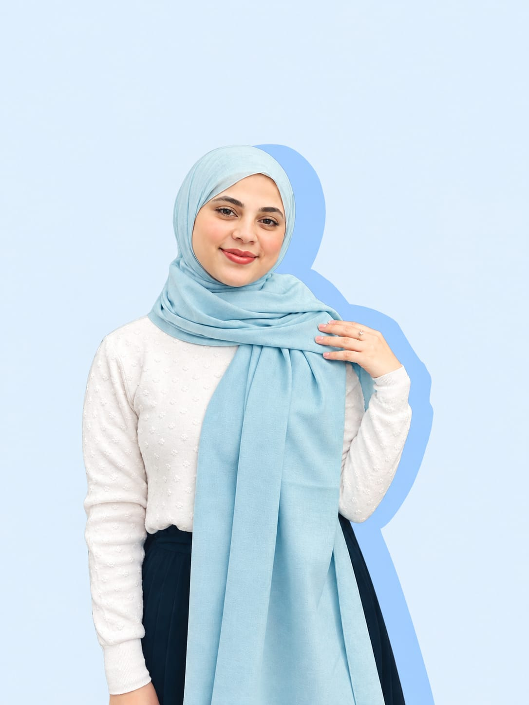
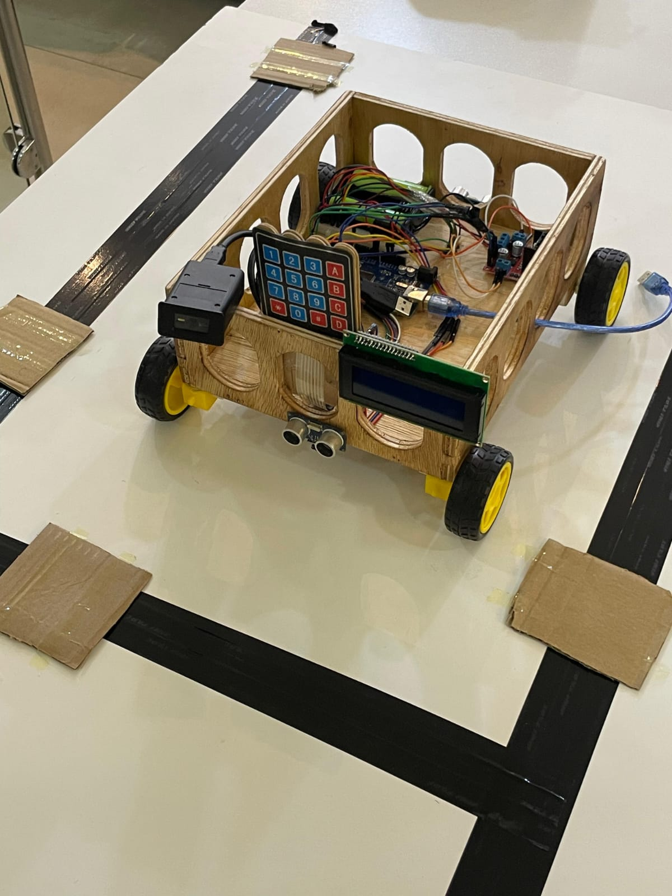

Sara Sawalmeh
Computer Engineer · Full Stack Developer
I turn thoughtful ideas into useful digital experiences — and see every problem as a chance to build something better.

I’m a Computer Engineering graduate with a broad foundation in technology and a growing focus on web development.
My studies introduced me to computer networks, embedded systems, data structures, operating systems, parallel programming, and computer organization. Along the way, I discovered how much I enjoy building for the web—from shaping an idea to solving the small details and seeing it come to life.
I’m always learning, experimenting, and looking for thoughtful ways to make technology more useful.
Full-stack web Developer
Web Development Trainee — Orange Digital Village (ODV),
Orange Jordan × Princess Sumaya University for Technology (PSUT)
Stamp Making Workshop
Participated in a hands-on stamp-making workshop at Orange Digital Village, learning the basic process of designing and creating custom stamps using digital fabrication tools.
View Workshop
Technical Skills
Arduino
GPU & Parallel Programming
C#
Python
SQL
HTML
JavaScript
CSS
Soft Skills
Communication
Teamwork
Problem Solving
Time Management
Attention to Detail
Adaptability
Presentation Skills

Smart Shopping Cart
A smart shopping cart that scans products, calculates the total price, and moves automatically while detecting obstacles.